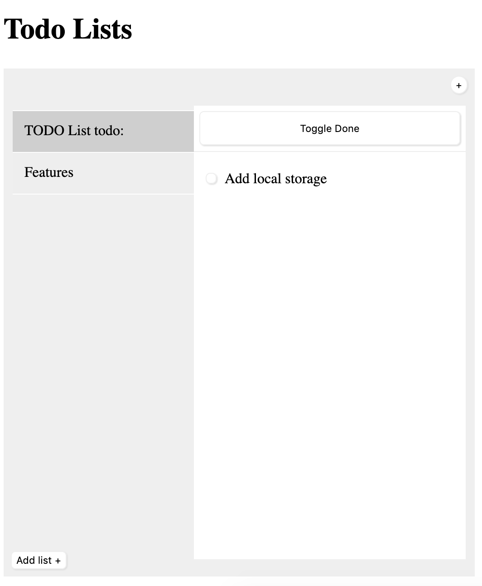

$(document).ready(function(){
var $active_list = null;
var $active_item = null;
var $todo_lists = $('#todo_lists');
var $inner_wrap = $('#list_wrap');
set_initial_active_list();
// When clicking a list title, set to active
$todo_lists.on('click', '.list', set_list);
function set_list(e){
e.stopPropagation();
if ( $active_list !== null){
unset_active_list();
}
unset_active_item();
set_active_list($(this));
}
// Set active item
$inner_wrap.on('click', '.todo_list li', set_item);
function set_item(e){
e.stopPropagation();
// stop event from bubbling up to set_list function
unset_active_item();
set_active_item($(this));
}
// add a new list item
$('#add_item').on('click', function(){
$active_list.find('.todo_list').append(get_new_list_item_html());
});
// add a new list
$('#add_list').on('click', function(){
unset_active_list();
$('#list_wrap').append(get_new_list_html());
var $new_list = $('#list_wrap li.list').last();
set_active_list($new_list);
});
//remove contenteditable attribute on blur
$todo_lists.on('blur', 'li p', function(e){
// console.log('blur',$(this).text(), $(this).text().length);
// if it is a list
if( $(this).parent().hasClass('list') ){
if ($(this).text().length >= 25){
$(this).text( $(this).text().slice(0,25) );
}
}
if( !$(this).parent().hasClass('list') ) {
// if it is a list item
var p_text = $(this).text().replace('<br>', '');
if (p_text.length >= 35) {
$(this).text( p_text.slice(0, 35) );
}
}
});
// remove active item when delete key is pressed
$(document).on('keydown', function(e) {
// if it is a list and has focus then don't delete with delete key
var focused = $active_list.find('p').is(':focus');
// if there is an active list and no active list items
if( !focused && $active_list && $active_item == null && e.keyCode == 8){
if( confirm('Are you sure you want to delete this list?') ){
if( $('.list').length > 0){
var $next_list = get_next_sibling($active_list);
}
$active_list.fadeOut(500, $active_list.remove);
unset_active_list();
set_active_list($next_list);
}
}
// enter key
if( $active_item == null && focused && e.keyCode == 13){
$($active_list).find('p').first().blur();
return false;
}
// if it is a list item
if ($active_item && !$active_item.hasClass('toggle_done_wrap')) {
focused = $active_item.find('p').is(':focus');
// delete key
if (!focused && e.keyCode == 8) {
// if there is another list item not marked done, set it as active item
// get all list items in current active list, excluded toggle done button
if ( $active_item.siblings().length > 1) {
var next_list_item = get_next_sibling($active_item);
}
// animate removal of items
$active_item.remove();
unset_active_item();
set_active_item(next_list_item);
}
// enter key
if (focused && e.keyCode == 13) {
e.preventDefault();
$active_item.find('p').blur();
}
}
});
// mark items as done
$inner_wrap.on('click', '.done_button', function(e){
e.stopPropagation();
// check if the parent class has a done class then remove the timestamp
if ( $(this).parent().hasClass('done') ){
// remove date
$(this).parent().find('.finish_date').remove();
} else {
// apply timestamp
// hide done li - marked as done
// if active add time else remove time
$(this).parent().find('p').append(get_done_html_string());
}
$(this).parent().toggleClass('done');
});
// toggle show done
$inner_wrap.on('click', '.toggle_done', function(e){
e.stopPropagation();
$(this).closest('ul').toggleClass('hide_done');
});
function set_content_editable($title){
$title.find('p').eq(0).attr('contentEditable', true);
}
function unset_content_editable($title){
$title.find('p').eq(0).attr('contentEditable', false);
}
// make list items editable
function set_initial_active_list(){
var $lists = $('.list');
if ($lists.length > 0 ){
$active_list = $lists.eq(0);
}
}
function set_active_list($list){
$list.addClass('active');
$active_list = $list;
set_content_editable($list)
}
function unset_active_list(){
if ($active_list){
$active_list.removeClass('active');
}
unset_content_editable($active_list);
$active_list = null;
}
// set active item and set it's contenteditable attribute
function set_active_item($item){
if ( $active_item !== null){
$active_item.removeClass('active');
}
$active_item = $item;
$active_item.addClass('active');
set_content_editable($active_item);
}
function unset_active_item(){
if ( $active_item !== null){
// in case the blur event doesn't fire.
// This can happen when clicking outside of list without editing a paragraph
$active_item.find('p').attr('contenteditable', false);
$active_item.removeClass('active');
$active_item = null;
}
}
function get_new_list_html(listName){
if ( listName == undefined){
listName = 'New List';
}
return "<li class='list'><p>"+ listName +"</p>" +
"<ul class='todo_list hide_done'><li class='toggle_done_wrap'><button class='toggle_done'>Toggle Done</button></li>"+
"</ul></li>"
}
function get_new_list_item_html(title){
if ( title == undefined){
title = 'New Item';
}
return "<li><button type='button' class='done_button'></button><p>" + title + "</p></li>";
}
function get_done_html_string(date){
if ( date == undefined){
date = new Date().toDateString();
}
return "<span class='finish_date'>" + date + "</span>";
}
function get_next_sibling($item){
var $next_item = $item.next();
if ( $next_item.length == 0 ){
$next_item = $item.prev();
}
return $next_item;
}
});